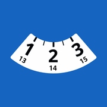

Websites und Anwendungen für die Betriebe von hier.
Vergasta Digital ist eine Webwerkstatt an der Rue du Temple in St-Imier. Wir schreiben Präsentationswebsites, interne Werkzeuge und Onlineshops für Handwerksbetriebe, Ladengeschäfte und Selbstständige im Berner Jura.
Was wir machen
- Präsentationswebsites
- Ein Unternehmen, seine Leistungen und seine Kontaktdaten zeigen, ohne dass der Besucher danach suchen muss, und dafür sorgen, dass es gefunden wird, wenn jemand nach seinem Gewerbe sucht. Genau das haben wir für F. Da Silva sàrl gemacht, einen Plattenlegerbetrieb in Péry-La Heutte.
- Anwendungen
- Wenn der Ordner oder die Excel-Datei nicht mehr genügt, bauen wir das Werkzeug, das übernimmt. Disque Bleu berechnet die Uhrzeit für die Parkscheibe und meldet sich vor Ablauf. Axolot vereinfacht Rechnungsstellung und Buchhaltung kleiner Schweizer Unternehmen. Beide gehen auf dieselbe Beobachtung zurück: eine wiederkehrende Aufgabe kostete Zeit.
- Onlineshops
- Katalog, Warenkorb, Zahlung per Karte oder TWINT über Stripe, Bestellverfolgung und eine Verwaltungsoberfläche, die Sie selbst bedienen. Custom To Lylia und BDPokéCards laufen auf dieser Grundlage.
- Kreative Projekte
- Manche Projekte beginnen mit einer Idee, die greifbar werden soll. Yamanote 3D lässt eine ruhige Fahrt auf der Yamanote-Linie in Tokio im Browser wiederaufleben. Vergasta Photo zeigt fotografische Sammlungen in einem eigens gebauten Portfolio, mit eigenem Publikationsstudio.
Ablauf eines Projekts
Am Anfang steht ein Gespräch, am Telefon oder bei einem Kaffee in St-Imier, um die Tätigkeit zu verstehen und zu klären, was die Website wirklich leisten soll. Danach erhalten Sie eine ausführliche Offerte per E-Mail, mit Preis und Zeitplan.
Ein Entwurf wird freigegeben, bevor die erste Zeile Code entsteht. Während der Entwicklung können Sie über eine Testadresse jederzeit sehen, wie weit die Arbeit ist, ohne auf eine Präsentation zu warten.
Beim Aufschalten kümmern wir uns um die Domain, die Weiterleitungen und die Einstellungen für die Indexierung. Der Quellcode gehört Ihnen, sobald die Rechnung beglichen ist, und Sie können ihn danach jederzeit jemand anderem übergeben.
Arbeiten
| Projekt | Art | Jahr |
|---|---|---|
| Stellar Rebirth stellar-rebirth.com | Präsentationswebsite | 2026 |
| Axolot axolot.ch | SaaS-Plattform | 2026 |
| F. Da Silva sàrl fdasilvasarl.ch | Präsentationswebsite | 2026 |
| Yamanote 3D yamanote-3d.com | Spiel | 2026 |
| Custom To Lylia customtolylia.ch | Onlineshop | 2026 |
|
 Disque Bleu Website App Store Google Play Erschienen in |
iOS- und Android-Anwendung | 2026 |
| Meine Termine App Store Google Play | iOS- und Android-Anwendung | 2026 |
| Lärm CH App Store | iOS-Anwendung | 2026 |
| Vergasta Photo vergastaphoto.ch | Fotoportfolio | 2026 |
|
|
Onlineshop | 2025 |
Schreiben
Ein Projekt, das kalkuliert werden soll, eine in die Jahre gekommene Website, die übernommen werden muss, oder einfach eine Frage dazu, was eine Neugestaltung kosten würde: das Formular landet direkt in unserem Postfach, und wir antworten in der Regel innerhalb von zwei Arbeitstagen.
Wenn Sie lieber persönlich darüber sprechen, schreiben Sie es in die Nachricht, und wir vereinbaren einen Termin.
Formular ausfüllen